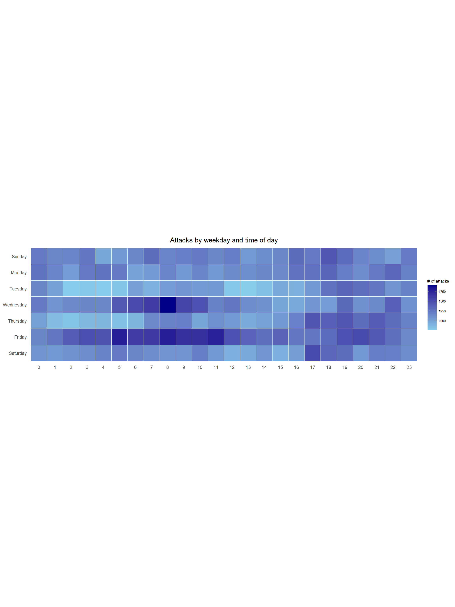
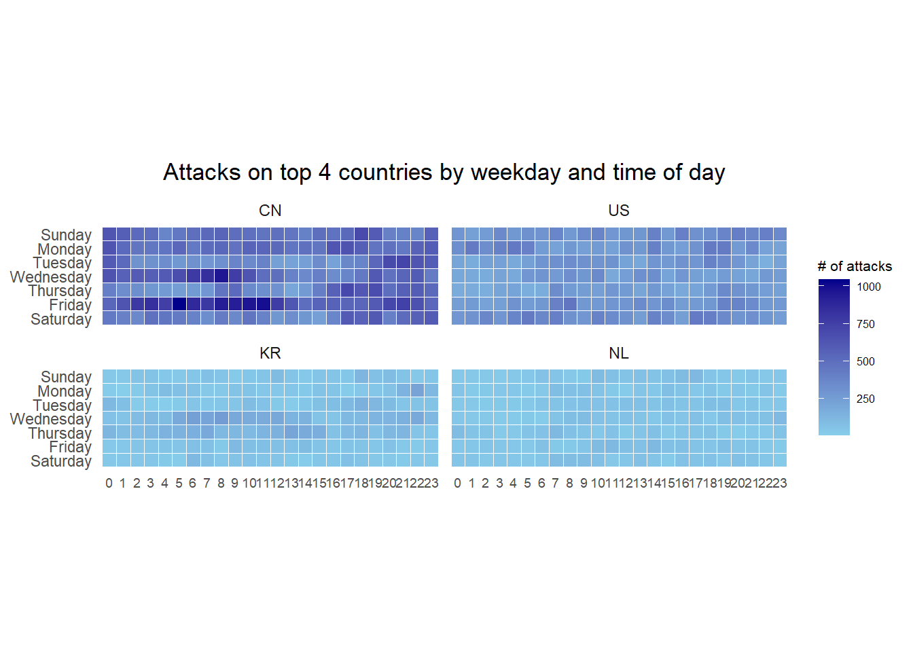

pacman::p_load(lubridate, scales, viridis, ggthemes, gridExtra, tidyverse, readxl, knitr, data.table)Create Calendar Heatmaps
Hands-on Exercise 6.1 - Visual Analysis for Time-Oriented Data
1. OVERVIEW
This study explores various approaches to set up visual analytics for time-oriented data.
2. R PACKAGE REQUIRED
2.1 Load R Packages
3. DATA PREPARATION
3.1 Acquire Data Source
This study will be based on eventlog.csv file will be used. This data file consists of 199,999 rows of time-series cyber attack records by country.
3.2 Import Data
3.2.1 Import Attribute Data
Involved two (2) steps : import and inspect imported data set.
Show the code
attacks <- read_csv("data/eventlog.csv")
problems(attacks)# A tibble: 0 × 5
# … with 5 variables: row <int>, col <int>, expected <chr>, actual <chr>,
# file <chr>3.3 Examine Data
Show the code
kable(head(attacks))| timestamp | source_country | tz |
|---|---|---|
| 2015-03-12 15:59:16 | CN | Asia/Shanghai |
| 2015-03-12 16:00:48 | FR | Europe/Paris |
| 2015-03-12 16:02:26 | CN | Asia/Shanghai |
| 2015-03-12 16:02:38 | US | America/Chicago |
| 2015-03-12 16:03:22 | CN | Asia/Shanghai |
| 2015-03-12 16:03:45 | CN | Asia/Shanghai |
3.4 Wrangle Data
3.4.1 Derive new fields with function
3.4.1.1 Create function
To derive new fields “wkday” and “hour”.
make_hr_wkday <- function(ts, sc, tz) {
real_times <- ymd_hms(ts,
tz = tz[1],
quiet = TRUE)
dt <- data.table(source_country = sc,
wkday = weekdays(real_times),
hour = hour(real_times))
return(dt)
}3.4.1.2 Derive new fields
wkday_levels <- c('Saturday', 'Friday', 'Thursday', 'Wednesday', 'Tuesday', 'Monday', 'Sunday')
attacks <- attacks %>%
group_by(tz) %>%
do(make_hr_wkday
(.$timestamp,
.$source_country,
.$tz)) %>%
ungroup() %>%
mutate(wkday = factor(wkday,
levels = wkday_levels),
hour = factor(hour,
levels = 0:23))3.4.1.3 Inspect output
kable(head(attacks))| tz | source_country | wkday | hour |
|---|---|---|---|
| Africa/Cairo | BG | Saturday | 20 |
| Africa/Cairo | TW | Sunday | 6 |
| Africa/Cairo | TW | Sunday | 8 |
| Africa/Cairo | CN | Sunday | 11 |
| Africa/Cairo | US | Sunday | 15 |
| Africa/Cairo | CA | Monday | 11 |
4. CALENDAR HEATMAPS
4.1 Single Calendar Heatmap
grouped <- attacks %>%
count(wkday, hour) %>%
ungroup() %>%
na.omit()
ggplot(grouped,
aes(hour,
wkday,
fill = n)) +
geom_tile(color = "white",
size = 0.1) +
theme_tufte(base_family = "Helvetica") +
coord_equal() +
scale_fill_gradient(name = "# of attacks",
low = "sky blue",
high = "dark blue") +
labs(x = NULL,
y = NULL,
title = "Attacks by weekday and time of day") +
theme(axis.ticks = element_blank(),
plot.title = element_text(hjust = 0.5),
legend.title = element_text(size = 8),
legend.text = element_text(size = 6))
Show the code
glimpse(grouped, 70)Rows: 168
Columns: 3
$ wkday <fct> Saturday, Saturday, Saturday, Saturday, Saturday, Satu…
$ hour <fct> 0, 1, 2, 3, 4, 5, 6, 7, 8, 9, 10, 11, 12, 13, 14, 15, …
$ n <int> 1081, 1053, 1088, 1130, 1183, 1226, 1163, 1128, 1083, …4.2 Build Multiple Calendar Heatmaps
There are 3 steps involved to identify the top 4 countries with the highest number of attacks :
count the number of attacks by country,
calculate the percent of attackes by country, and
save the results in a tibble data frame.
4.2.1 Count events of attacks
Show the code
attacks_by_country <- count(attacks,
source_country) %>%
mutate(percent = percent(n/sum(n))) %>%
arrange(desc(n))4.2.2 Prepare data frame
Extract the attack records of the top 4 countries from attacks data frame and save the data in a new tibble data frame (i.e. top4_attacks).
Show the code
top4 <- attacks_by_country$source_country[1:4]
top4_attacks <- attacks %>%
filter(source_country %in% top4) %>%
count(source_country, wkday, hour) %>%
ungroup() %>%
mutate(source_country = factor(
source_country,
levels = top4)) %>%
na.omit()4.2.3 Plot multiple calendar heatmaps
Show the code
ggplot(top4_attacks,
aes(hour,
wkday,
fill = n)) +
geom_tile(color = "white",
size = 0.1) +
theme_tufte(base_family = "Helvetica") +
coord_equal() +
scale_fill_gradient(name = "# of attacks",
low = "sky blue",
high = "dark blue") +
facet_wrap(~source_country,
ncol = 2) +
labs(x = NULL,
y = NULL,
title = "Attacks on top 4 countries by weekday and time of day") +
theme(axis.ticks = element_blank(),
axis.text.x = element_text(size = 7),
plot.title = element_text(hjust = 0.5),
legend.title = element_text(size = 8),
legend.text = element_text(size = 6) )